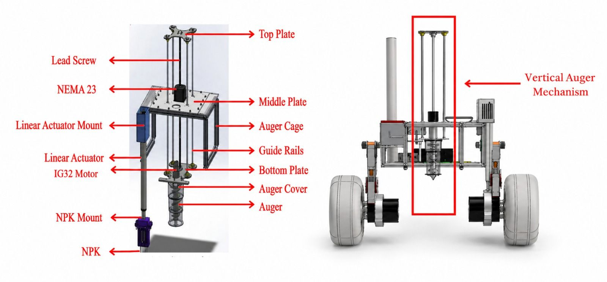
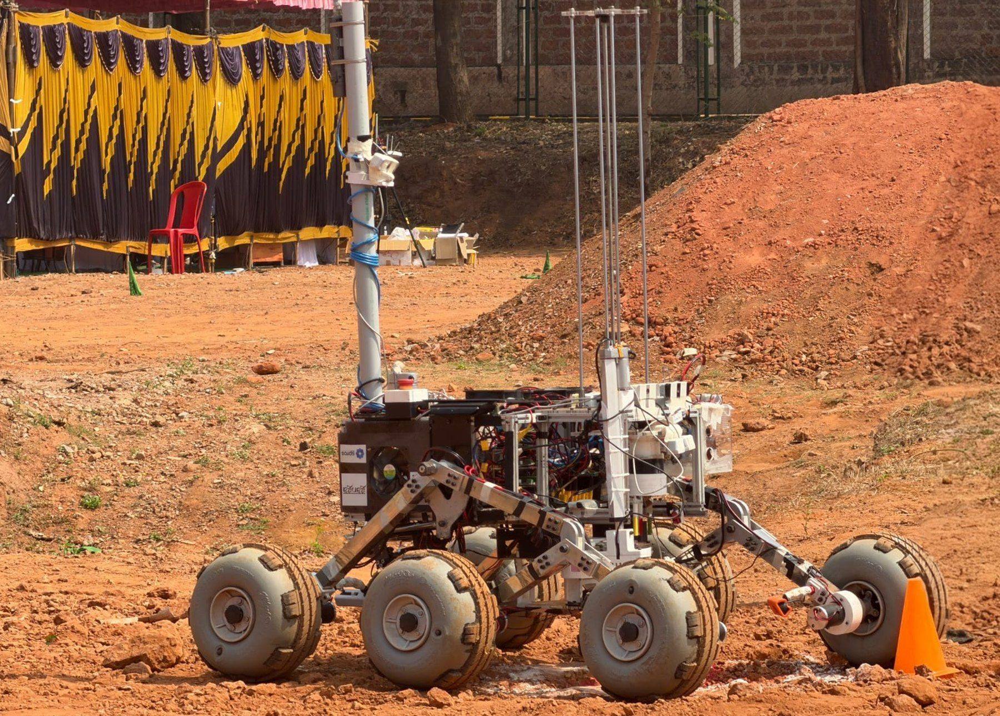
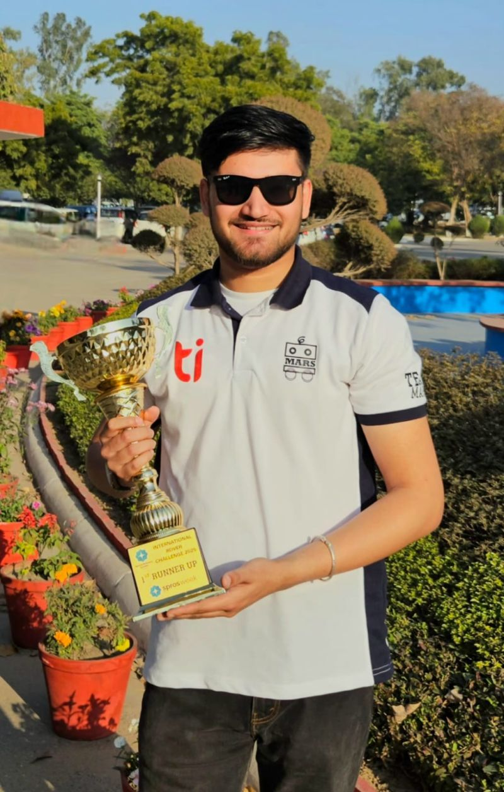
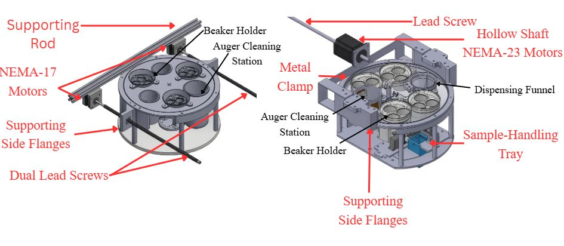
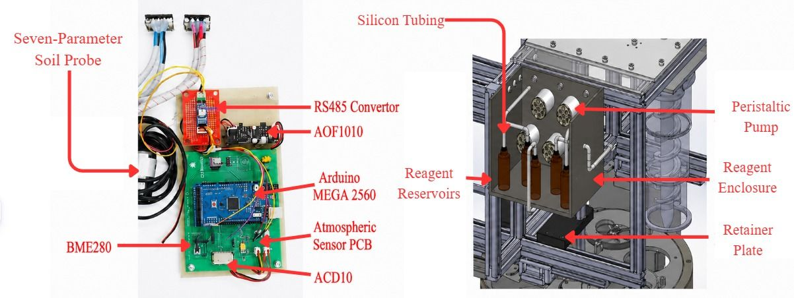
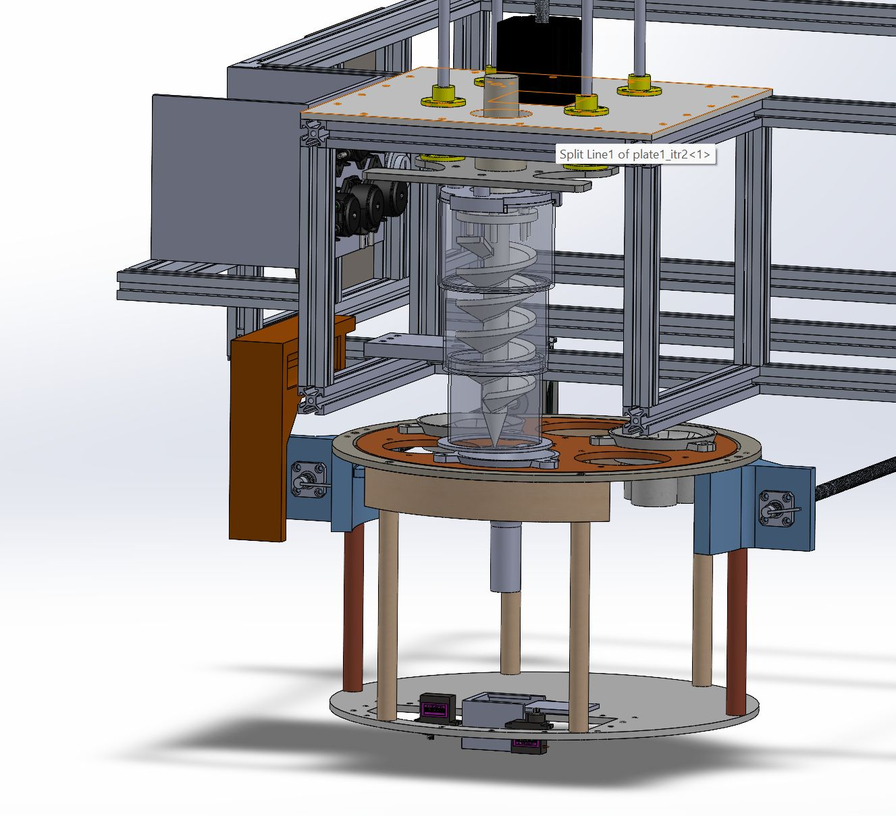
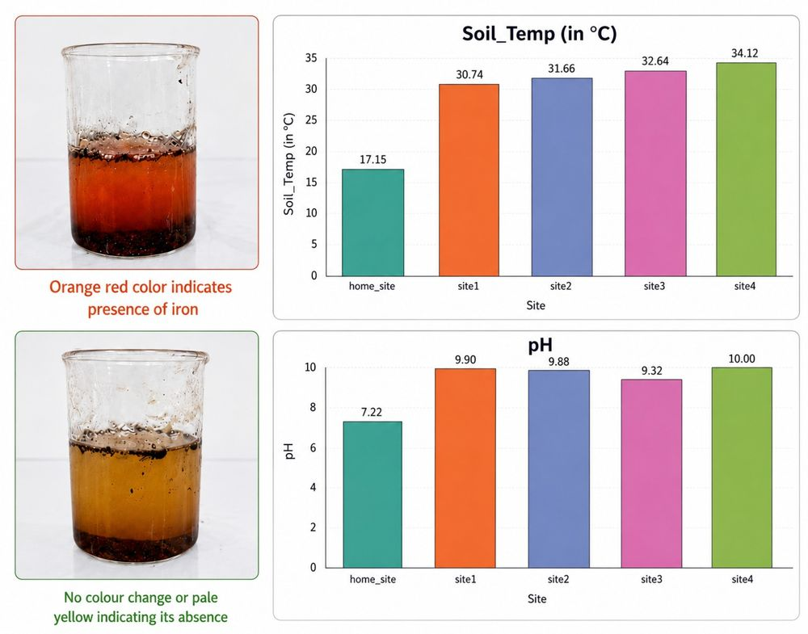

Drill below the surface
A guided vertical auger with a protective cover, so every sample stays clean.
A subsystem that drills below the surface, recovers soil without contamination and analyses it on board, across multiple sites, in the field. I designed and fabricated it for Alaknanda and oversaw it on Ganga.





A guided vertical auger with a protective cover, so every sample stays clean.

A rotating tray carries samples between stations, redesigned for Ganga.

Sensors and automated chemistry turn soil into data in the field.


IRC 2025, and the judges named it the best-designed soil-testing system. It also led to a published patent application.


I designed and fabricated the complete ABEx subsystem for Alaknanda, then oversaw it on Ganga as Team Captain. Named inventor on the patent application; IPRoMM 2026 paper accepted.